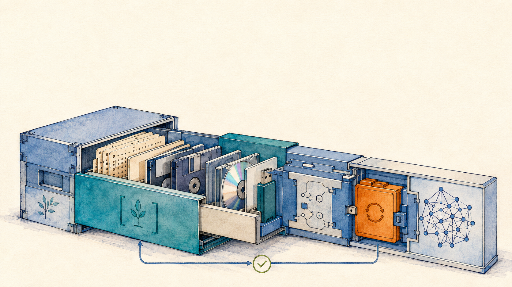

15 October 2026
Generative KI für Datenaufbereitung, Datenmigration und die Pflege von Interfaces
Göttinger Digitale Akademie, Akademie der Wissenschaften zu Göttingen
Date 15 October 2026, a half day of three and a half hours, hybrid Event Göttinger Digitale Akademie, Akademie der Wissenschaften zu Göttingen Audience staff of academy research projects and library guests Teaching language German Status planned

Specialisation
A hybrid half day with a parallel video channel, taught in German as the pre-conference workshop to the closing conference of the academy's digital programme, whose theme pairs sustainability and artificial intelligence. The subject is generative AI for the preparation and migration of research data and for the semi-automated maintenance of user interfaces and service endpoints. At three and a half hours this is the narrowest cut of the upcoming instances, and it sits closer to research data engineering than to the full arc of the line.
The framing argument ties the instance to its conference. Academy projects produce data, editions and interfaces over decades, and at the end of a funding period migration and maintenance fall due. That work is repetitive, rule-governed and source-bound, which is where coding agents carry it. The stated condition is machine-readable project documentation, because what is documented nowhere can be observed by no agent.
The central methodological slide separates agent-written scripts from direct model transformation. The agent characterises the data, writes a transformation script, tests it against known cases and executes both, so the script stays deterministic, repeatable and inspectable and every correction becomes a diff under version control. Transformation by the model itself stays limited to small individually verifiable units such as a single recognised page or a boundary case the script does not cover.
Three existing projects carry the session as case studies, a music-archival pipeline that moves spreadsheet holdings into a linked-data model and generates an exploration interface, a library pipeline that runs from scans to TEI in stages with deterministic schema validation and a human-set workflow status per document, and a static generator for a review journal whose declarative element mapping carries most display decisions without touching code. This is also the one instance among the seven whose teaching text is already written, meaning full slide texts with speaker notes, each fundamentals slide carrying a provenance field that names the slide of the Full Slide Deck it adapts. The time distribution inside the morning is fixed nowhere, and the demonstration dataset is still undecided.
Hands-on, on the participants' own material
- Build a knowledge vault with a short instruction file and a document describing the data sample.
- Place the sample and have the agent characterise it.
- Formulate a bounded commission with acceptance criteria.
- Check the result against one's own expertise and run a correction round.
Module coverage
- Understanding Large Language Models, touched briefly A compact opening, sharpened onto data work, where counting, arithmetic and exact string operations are the unreliable cases.
- Prompt Engineering, touched briefly One dedicated slide on formulating a commission to an agent, with goal, context, acceptance criteria and constraints, placed immediately before the hands-on as its checklist.
- Knowledge and Context Engineering, taught in full Why agents need context, context rot, what belongs in an instruction file, and what a knowledge document and a knowledge vault are. The vault is the first working step of the exercise.
- Agentic Engineering, taught in full and the centre of the session What an agent is, how the agentic loop is shaped, and a two-part live demonstration on data preparation and on interface maintenance with a four-step fallback chain behind it.
- Critical Perspectives and Governance, taught in full Its own slide on checking artefacts against the holdings, with the two checking levels of deterministic and domain-expert, addressed to the participants as the critical experts in the loop.
Materials
- Slide deck (GDA Göttingen 2026) To be generated from the written slide texts once they are accepted. The register carries no link yet.
- Lecture Notes (GDA Göttingen 2026) In preparation in the instance folder. The underlying slide texts with speaker notes exist and were adversarially reviewed with all findings resolved.
- Demonstration material The partner institute has to clear the demonstration state for public display, and the dataset for the first part is undecided.
Provenance
This instance is a documented specialisation of the Full Slide Deck and the Full Lecture Notes, which are maintained once and cut into five modules. What this instance selects, cuts and adds is recorded in its repository folder, workshops/2026-10-15-gda-goettingen.